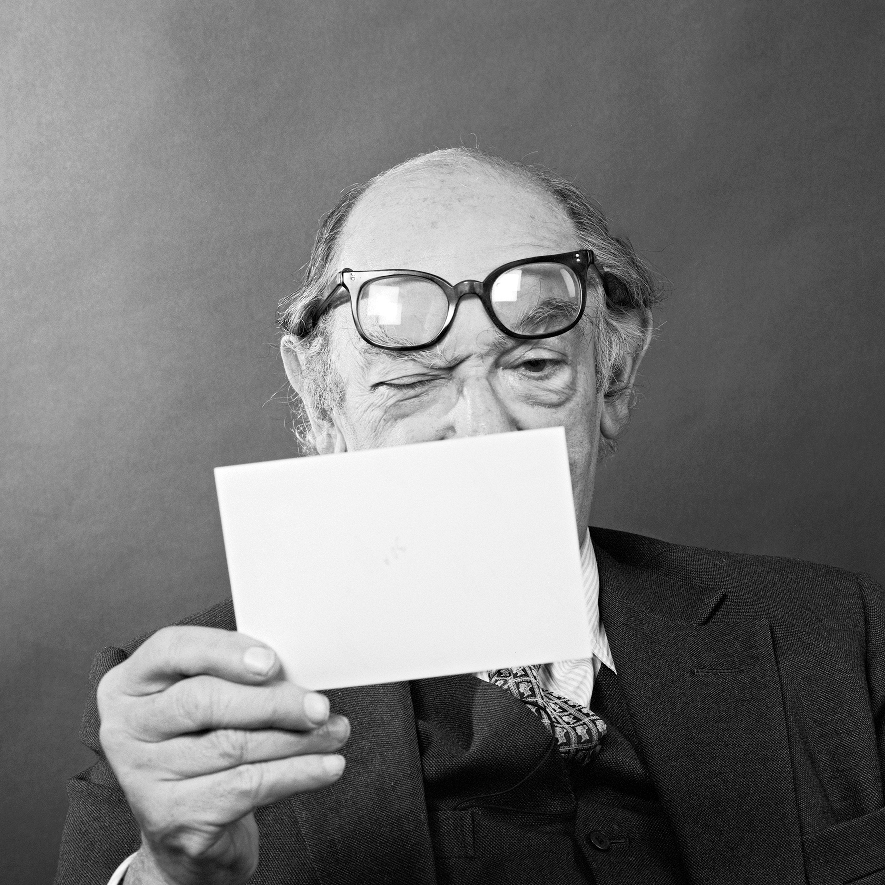

Desacuerdos & Receptividad
El verdadero problema no está en la existencia de los desacuerdos, como sí en el modo en que los abordamos (y los supuestos, a menudo falsos, sobre los que actuamos durante esos momentos). Minson quisiera equiparnos con las herramientas prácticas (¡basadas en la evidencia!) que son útiles para tener lo que denomina desacuerdos constructivos
, es decir, desacuerdos en que las partes involucradas se marchan con una mayor disposición a hablarse de nuevo (Minson 2026, XXV). Dichas herramientas se subsumen en lo que Minson llama receptividad a opiniones contrarias
. Define este constructo como la disposición a acceder, considerar y evaluar los puntos de vista tanto en favor como en contra de algún asunto, de una manera imparcial
(Minson 2026, 21).1 ❦ ¶ ∴
El acento no está puesto en la persuasión, y ni siquiera en el acuerdo sobre algún punto medio. De hecho, las investigaciones de Minson parecen indicar que aproximarnos a los desacuerdos con el objetivo de cambiar la opinión de la contraparte no es más que una buena manera de convertir un desacuerdo en un conflicto.

Motivaciones para la Receptividad
En la raíz, casi todo lo que acaba saliendo mal en los desacuerdos viene del realismo ingenuo: nuestra natural tendencia a asumir irreflexivamente que el mundo es tal y como lo percibimos, que nuestros juicios acerca de la realidad son con certeza verdaderos. Entramos en la conversación con alguien más teniendo la incuestionada e incuestionable convicción de que nosotros estamos en lo cierto y la otra persona sencillamente está equivocada. De aquí se desprende otro automatismo
psicológico igualmente perjudicial: la atribución.2
Probando que somos inteligentes
Habiendo establecido que la otra persona obviamente está equivocada, generamos todo tipo de explicaciones (y nos las creemos) sobre las causas y motivos del presunto error ajeno. La otra persona no solo está equivocada, sino que está equivocada porque no es lo suficientemente inteligente, no ha investigado tanto, tiene malas intenciones, es incapaz de ver las cosas como son, etc. Nuestra perseverancia en el realismo ingenuo y las atribuciones nos apartan de cualquier desacuerdo constructivo que pudiéramos haber tenido.
Esta es una prueba de la jerarquía diseñada
A collection of textile samples lay spread out on the table - Samsa was a travelling salesman - and above it there hung a picture that he had recently cut out of an illustrated magazine and housed in a nice, gilded frame. It showed a lady fitted out with a fur hat and fur boa who sat upright, raising a heavy fur muff that covered the whole of her lower arm towards the viewer. Gregor then turned.
To look out the window at the dull weather. Drops of rain could be heard hitting the pane, which made him feel quite sad. How about if I sleep a little bit longer and forget all this nonsense
, he thought, but that was something he was unable to do because he was used to sleeping on his right, and in his present state couldn't get into that position.

One morning, when Gregor Samsa woke from troubled dreams, he found himself transformed in his bed into a horrible vermin. He lay on his armour-like back, and if he lifted his head a little he could see his brown belly, slightly domed and divided by arches into stiff sections. The bedding was hardly able to cover it and seemed ready to slide off any moment. His many legs, pitifully thin compared with the size of the rest of him, waved about helplessly as he looked. What's happened to me?
he thought. It wasn't a dream. His room, a proper human room although a little too small, lay peacefully between its four familiar walls.

I am so happy, my dear friend, so absorbed in the exquisite sense of mere tranquil existence, that I neglect my talents. I should be incapable of drawing a single stroke at the present moment; and yet I feel that I never was a greater artist than now. When, while the lovely valley teems with vapour around me, and the meridian sun strikes the upper surface of the impenetrable foliage of my trees, and but a few stray gleams steal into the inner sanctuary, I throw myself down among the tall grass by the trickling stream; and, as I lie close to the earth, a thousand unknown plants are noticed by me: when I hear the buzz of the little world among the stalks, and grow familiar with the countless indescribable forms of the insects and flies, then I feel the presence of the Almighty, who formed us in his own image, and the breath
He lay on his armour-like back, and if he lifted his head a little he could see his brown belly, slightly domed and divided by arches into stiff sections. The bedding was hardly able to cover it and seemed ready to slide off any moment. His many legs, pitifully thin compared with the size of the rest of him, waved about helplessly as he looked. What's happened to me?
he thought. It wasn't a dream. His room, a proper human room although a little too small, lay peacefully between its four familiar walls.
No existe realmente ningún método científico o de otra clase que permita a las personas navegar con seguridad entre los peligros contrapuestos de creer demasiado o creer demasiado poco. Enfrentarse a estos peligros parece ser el deber de cada uno de nosotros, y encontrar la vía correcta entre ambos da la medida de nuestra sabiduría como humanos. Del hecho de que la temeridad pueda ser un vicio en los soldados no se sigue que jamás deba predicarse el valor ante ellos. Lo que se les debe predicar es el valor templado por la responsabilidad.
A collection of textile samples lay spread out on the table - Samsa was a travelling salesman - and above it there hung a picture that he had recently cut out of an illustrated magazine and housed in a nice, gilded frame. It showed a lady fitted out with a fur hat and fur boa who sat upright, raising a heavy fur muff that covered the whole of her lower arm towards the viewer. Véase a continuación el resumen de las secciones donde se plantea el desafío de Glaucón en República (Libro II):
Glaucón: la justicia no es vista como un bien en sí mismo. Bienes que deseamos por sí mismos, que deseamos por sus consecuencias y que deseamos por ambas cosas. La justicia es colocada por la mayoría en la segunda clase, como algo en sí mismo penoso, y sólo deseable por sus consecuencias.
Glaucón: la justicia no es cultivada voluntariamente. Los hombres sufren más al ser víctimas de injusticias que lo que disfrutan al cometerlas; por eso la justicia consiste en un acuerdo para no sufrir ni cometer injusticias. Sólo cultiva la justicia el que es impotente para cometer injusticia. Mito de Giges.
Adimanto: es preferible la injusticia a la justicia. Cuando los injustos son ricos pueden reparar cualquier delito y librarse de los males del más allá. Incluso se puede persuadir a los dioses.
Gregor then turned to look out the window at the dull weather. Drops of rain could be heard hitting the pane, which made him feel quite sad. How about if I sleep a little bit longer and forget all this nonsense
, he thought, but that was something he was unable to do because he was used to sleeping on his right, and in his present state couldn't get into that position.
Elementos de la tragedia aristotélica
- Mythos (Trama): La estructuración de los incidentes y acciones. Aristóteles consideraba que esta era la parte más importante de la tragedia, por encima de los personajes, ya que la obra es fundamentalmente una imitación de la vida y de la acción.
-
Ethos (Personaje): Las cualidades morales y éticas de los agentes que determinan sus decisiones de manera inevitable. Se manifiesta claramente a través de dos figuras estructurales en la escena:
- El protagonista, que habitualmente posee una falla trágica fundamental o hamartia.
- El antagonista, que cataliza el conflicto y presiona las decisiones morales del héroe.
- Dianoia (Pensamiento): La capacidad discursiva de expresar lo que es pertinente y apropiado según la tensión dramática del momento.
Los cinco cánones de la retórica
-
Inventio (Invención): El proceso de descubrir y formular los argumentos más persuasivos para un caso particular. Esta fase inicial requiere una evaluación rigurosa del contexto, apoyándose tradicionalmente en tres modos de apelación:
- Ethos: La autoridad, carácter y credibilidad proyectada por el orador.
- Pathos: La disposición emocional que se busca despertar e instalar en el público.
- Logos: La arquitectura lógica, racional y probatoria del argumento mismo.
- Dispositio (Disposición): La organización estratégica de los argumentos descubiertos. Un discurso clásico requiere que esta disposición guíe al oyente orgánicamente desde la introducción del problema hasta una conclusión ineludible.
-
Elocutio (Elocución): El dominio de la estética y del lenguaje. Consiste en revestir los argumentos con las palabras exactas, gobernándose por tres virtudes estilísticas:
- Pureza gramatical y fidelidad al idioma.
- Claridad expositiva para evadir la ambigüedad semántica.
- Ornato, entendido como el uso comedido y preciso de figuras retóricas.
However hard he threw himself onto his right, he always rolled back to where he was. He must have tried it a hundred times, shut his eyes so that he wouldn't have to look at the floundering legs, and only stopped when he began to feel a mild, dull pain there that he had never felt before. Oh, God
, he thought, what a strenuous career it is that I've chosen! Travelling day in and day out. Doing business like this takes much more effort than doing your own business at home, and on top of that there's the curse of travelling, worries about making train connections, bad and irregular food, contact with different people all the time so that you can never get to know anyone or become friendly with them. It can all go to Hell!
La pregunta de Sócrates no es ¿cuál es nuestro deber?
, ni ¿cómo podemos ser buenos?
, y tampoco es ¿cómo podemos ser felices?
. Su interrogante es “¿cómo ha de vivir uno?”. Esta formulación destaca sobre las alternativas por tres razones. Primero, es intemporal: no inquiere sobre los resultados de la razón instrumental en algún momento específico frente algún problema concreto. Obliga a tomar la vida en conjunto y decir qué hemos de hacer con ella. La segunda cualidad es que es impersonal. Si bien involucra mis propias razones para lo que yo considero una vida digna de ser vivida, en realidad conlleva una posible universalidad de lo que se contesta, pues habría de ser valorado por cualquiera. El tercer factor es que esto ni siquiera supone que sea lo mismo a preguntar ¿qué vida debo vivir desde un punto de vista moral?
. Abre las puertas de par en par a las respuestas de los inmoralistas, para quienes -en pocas palabras- no existen razones inherentes para vivir moralmente. Y por razones inherentes
lo que se quiere decir es que los inmoralistas reclaman ¿por qué hay algo que yo tuviera que, debiera hacer?
, y no encuentran criterios impersonales, sino solo satisfacciones egoístas (ἀρετή).
Esta distinción deja ver varias cosas. En principio, muestra que el escéptico en realidad no vive anestesiado (PH: 1.29, ἀόχλητον πάντῃ) ni desea estarlo. Todo lo que busca y lo que siempre lo ha impulsado es la serenidad de espíritu en las cosas que dependen de la opinión de uno
(PH: 1.25 y 1.30, κατὰ δόξαν ἀταραξίαν). Para evitar malentendidos, es importante tener en cuenta que la búsqueda de tranquilidad intelectual, como punto de partida habitual para quien luego llega a ser un escéptico,3 no implica que ésta sea el único camino posible hacia el escepticismo.
SócratesPero dime a continuación todavía una cosa: ¿cuál es, para nosotros, la función que tienen los nombres y cuál decimos que es su hermoso resultado?
CrátiloCreo que enseñar, Sócrates. Y esto es muy simple: el que conoce los nombres, conoce también las cosas.
— Platón, Crátilo (485d)
He felt a slight itch up on his belly; pushed himself slowly up on his back towards the headboard so that he could lift his head better; found where the itch was, and saw that it was covered with lots of little white spots which he didn't know what to make of; and when he tried to feel the place with one of his legs he drew it quickly back because as soon as he touched it he was overcome by a cold shudder. He slid back into his former position. Getting up early all the time
, he thought.
En los debates contemporáneos, más temprano que tarde alcanzamos justamente el impasse lógico descrito por James. Considérense como ilustración la querella en torno a las explicaciones científicas y metafísicas, tal como la que surgió en el debate entre Bertrand Russell y Frederick Copleston:
Poco más de un año después de este intercambio, las mismas cuestiones surgieron en el debate que tuvo Copleston con A. J. Ayer. Para el Padre Copleston, el científico no se plantea la pregunta de por qué existe algo. A su parecer, esa clase de interrogantes eran responsabilidad del filósofo o metafísico. Los cuestionamientos de Ayer a dicha postura son casi un calco del ejemplo del cerillo que Russell ya había dado. Como era de esperar, Copleston no quedó satisfecho con la sugerencia de Ayer. Desde luego, las explicaciones funcionan así cuando se trata de la investigación científica. El problema era, a ojos de Copleston, que las explicaciones científicas siempre dejarían una brecha que no se podría llenar con la misma estrategia de retrotraernos en la justificación. En el transcurso de la discusión no hicieron sino dar vueltas en círculos en torno al mismo problema de si hay explicaciones metafísicas.
| Designation | Proportion | Value (px) |
|---|---|---|
| The Golden Section | 1 : 1.618 | 21.03 |
| Perfect Fifth | 2 : 3 | 19.50 |
| Perfect Fourth | 3 : 4 | 17.33 |
| Década | Puesto | Autores | Citas |
|---|---|---|---|
| 1920-1930 | 3 | 19% | 19% |
| 1931-1940 | 3 | 25% | 30% |
| 1941-1950 | 2 | 28% | 28% |
| 1951-1960 | 2 | 27% | 27% |
| 1961-1970 | 2 | 28% | 27% |
- Por sus siglas en inglés, podemos referirnos a esto como rov, receptiveness to opposing views.↩
- A wonderful serenity has taken possession of my entire soul, like these sweet mornings of spring which I enjoy with my whole heart. I am alone, and feel the charm of existence in this spot, which was created for the bliss of souls like mine. I am so happy, my dear friend, so absorbed in the exquisite sense of mere tranquil existence, that I neglect my talents. I should be incapable of drawing a single stroke at the present moment; and yet I feel that I never was a greater artist than now. When, while the lovely valley teems with vapour around me, and the meridian sun strikes the upper surface of the impenetrable foliage of my trees, and but a few stray gleams steal into the inner sanctuary, I throw myself down among the tall grass by the trickling stream; and, as I lie close to the earth, a thousand unknown plants are noticed by me: when I hear the buzz of the little world among the stalks, and grow familiar with the countless indescribable forms of the insects and flies, then I feel the presence of the Almighty, who formed us in his own image, and the breath.↩
- Al menos así se afirma en PH: 1.12, Ἀρχῆν δὲ τῆς σκεπτικῆς αἰτιώδη.↩
Abreviaturas
Referencias
Dinámicas de la Receptividad en Debates Digitales Estructurados. Revista de Psicología Social Aplicada, 42(3), 145–168.